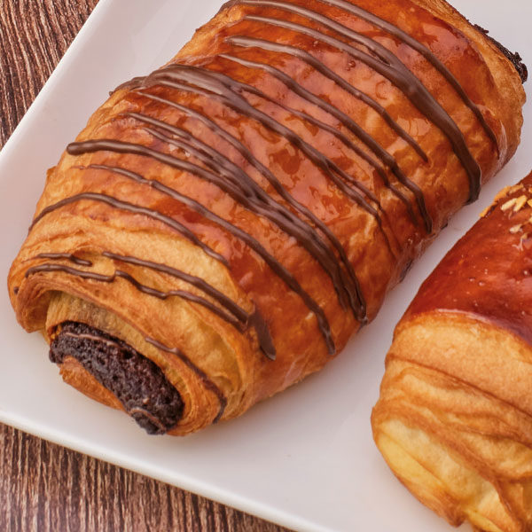
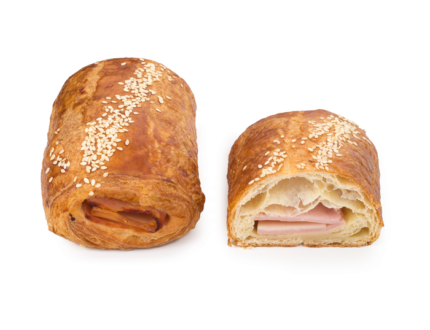

Magdalenas
Ingredientes para napolitana:
- -Masa de hojaldre (puedes comprarla o hacerla con harina, levadura, sal, azúcar, agua y mantequilla)
- -Crema de chocolate
- -Jamón cocido
- -Queso (puede ser queso para untar o cualquier tipo que prefieras)
- -Huevo (para pincelar)
Modo de preparación resumido:
- -Extender la masa de hojaldre en forma rectangular..
- -Cortar la masa en rectángulos más pequeños.
- -En la mitad de cada rectángulo, colocar crema de chocolate, jamón cocido y queso.
- -Doblar la otra mitad de la masa sobre el relleno y sellar los bordes.
- -Pincelar con huevo batido.
- -Hornear hasta que estén doradas y al insertar un palillo, este salga limpio.
- ¡Ahora tienes napolitanas mixtas listas para disfrutar! Puedes ajustar los ingredientes según tus preferencias.